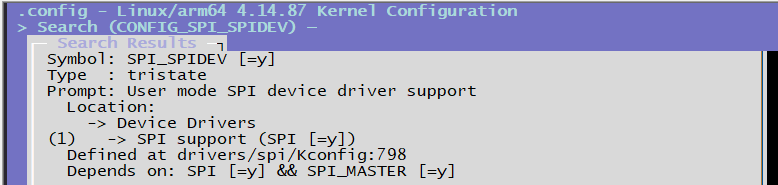
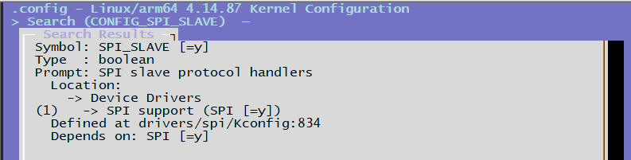
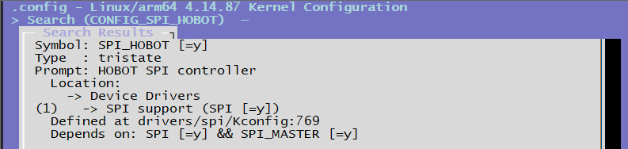
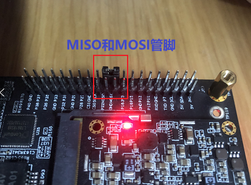
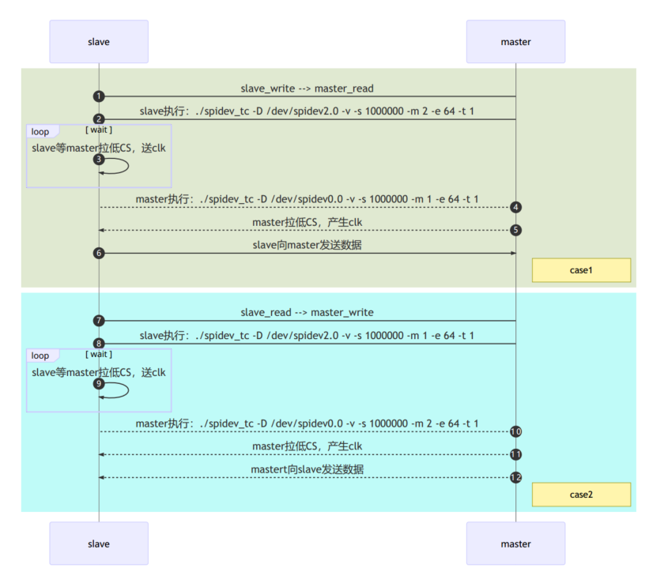

4.3.8. SPI调试指南
4.3.8.1. 驱动代码
代码路径
drivers/spi/spidev.c # 生成字符设备节点，可供用户空间操作
drivers/spi/spi.c # spi框架层代码
drivers/spi/spi-hobot.c # spi驱动层代码
内核配置
CONFIG_SPI_SPIDEV=y # spidev.c配置选项

CONFIG_SPI_SLAVE=y # CONFIG_SPI_SPIDEV依赖的配置选项

CONFIG_SPI_HOBOT=y # spi-hobot.c驱动层配置选项

DTS设备节点配置
在下述文件中添加相应的设备节点，并对内核进行编译。 文件路径为：arch/arm64/boot/dts/hobot/hobot-xj3.dtsi
spi0: spi@0xA5004000 {
compatible = "hobot,hobot-spi";
reg = <0 0xA5004000 0 0x1000>;
clocks = <&spi0_mclk>;
clock-names = "spi_mclk";
interrupt-parent = <&gic>;
interrupts = <0 33 4>;
resets = <&rst 0x50 4>;
reset-names = "spi0";
pinctrl-names = "default";
pinctrl-0 = <&spi0_func>;
status = "disabled";
#address-cells = <1>;
#size-cells = <0>;
};
文件路径：arch/arm64/boot/dts/hobot/hobot-x3-sdb.dts
/* 配置为master */
&spi0 {
status = "okay";
spidev@0x00 {
compatible = "rohm,dh2228fv";
spi-max-frequency = <20000000>;
reg = <0>;
};
};
/* 配置为slave */
&spi2 {
status = "okay";
slave = <1>;
slave@0x00 {
compatible = "rohm,dh2228fv";
spi-max-frequency = <20000000>;
reg = <0>;
};
};
以spi0和spi2配置为例
hobot-xj3.dtsi中的节点为公用的节点基本不用修改，针对不同的硬件，会在对应的dts中进行修改
spi0配置为spi master，spi2配置为spi slave，其中spi2中 isslave = <1> 属性表示该spi配置为slave
两个节点中的spidev@0x00、slave@0x00节点会在spidev.c中被识别成为/dev/spidev0.0和/dev/spidev2.0设备节点，供用户空间操作
4.3.8.2. SPI驱动
驱动位于：drivers/spi/spi-hobot.c
SPI master/slave配置
static int hb_spi_probe(struct platform_device *pdev)
{
...
/* master or slave mode select */
isslave = of_property_read_bool(pdev->dev.of_node, "slave");
if (isslave == MASTER_MODE) {
ctlr = spi_alloc_master(&pdev->dev, sizeof(*hbspi));
if (!ctlr) {
dev_err(&pdev->dev, "failed to alloc spi master\n");
return -ENOMEM;
}
} else if (isslave == SLAVE_MODE) {
ctlr = spi_alloc_slave(&pdev->dev, sizeof(*hbspi));
if (!ctlr) {
dev_err(&pdev->dev, "failed to alloc spi slave, try master\n");
return -ENOMEM;
}
}
...
}
SPI注册
向内核注册SPI控制器
static int hb_spi_probe(struct platform_device *pdev)
{
...
if (isslave == MASTER_MODE) {
hbspi->isslave = MASTER_MODE;
snprintf(ctrl_mode, sizeof(ctrl_mode), "%s", "master");
ctlr->bus_num = pdev->id;
// ctlr->num_chipselect = HB_SPI_MAX_CS;
ctlr->mode_bits = SPI_CPOL | SPI_CPHA | SPI_LSB_FIRST | SPI_CS_HIGH |
SPI_NO_CS;
ctlr->setup = hb_spi_setup;
ctlr->prepare_transfer_hardware = hb_spi_prepare_xfer_hardware;
ctlr->transfer_one = hb_spi_transfer_one;
ctlr->unprepare_transfer_hardware = hb_spi_unprepare_xfer_hardware;
ctlr->set_cs = hb_spi_chipselect;
ctlr->dev.of_node = pdev->dev.of_node;
} else if (isslave == SLAVE_MODE) {
hbspi->isslave = SLAVE_MODE;
snprintf(ctrl_mode, sizeof(ctrl_mode), "%s", "slave");
ctlr->mode_bits = SPI_CPOL | SPI_CPHA | SPI_LSB_FIRST;
ctlr->setup = hb_spi_slave_setup;
ctlr->prepare_message = hb_spi_slave_prepare_message;
ctlr->transfer_one = hb_spi_slave_transfer_one;
ctlr->slave_abort = hb_spi_slave_abort;
}
/* register spi controller */
ret = devm_spi_register_controller(&pdev->dev, ctlr);
if (ret) {
dev_err(&pdev->dev, "failed to register %s controller(%d)\n",
ctrl_mode, ret);
goto clk_dis_mclk;
}
...
}
硬件初始化
硬件初始化函数如下，寄存器含义可通过与地平线相关确认
/* spi hw init */
static void hb_spi_init_hw(struct hb_spi *hbspi)
{
u32 val = 0;
/* First, should reset the whole controller */
hb_spi_reset(hbspi);
hb_spi_en_ctrl(hbspi, HB_SPI_OP_CORE_DIS, HB_SPI_OP_NONE,
HB_SPI_OP_NONE);
hb_spi_wr(hbspi, HB_SPI_INTSETMASK_REG, HB_SPI_INT_ALL);
/* clear all interrupt pending */
hb_spi_wr(hbspi, HB_SPI_SRCPND_REG, HB_SPI_INT_ALL);
/* init rfto */
hb_spi_wr(hbspi, HB_SPI_RFTO_REG, 0x27F);
/* no instruction */
hb_spi_wr(hbspi, HB_SPI_INST_REG, 0x0);
hb_spi_wr(hbspi, HB_SPI_INST_MASK_REG, 0xFFFFFFFF);
/* spi master mode */
val = hb_spi_rd(hbspi, HB_SPI_CTRL_REG);
if (hbspi->isslave == SLAVE_MODE)
val |= HB_SPI_SLAVE_MODE;
else
val &= (~HB_SPI_SLAVE_MODE);
if (hbspi->isslave == MASTER_MODE)
val &= (~HB_SPI_SAMP_SEL);
hb_spi_wr(hbspi, HB_SPI_CTRL_REG, val);
if (debug)
dev_err(hbspi->dev, "%s CTRL=%08X\n",
__func__, hb_spi_rd(hbspi, HB_SPI_CTRL_REG));
hb_spi_config(hbspi);
hb_spi_en_ctrl(hbspi, HB_SPI_OP_CORE_EN, 0, 0);
}
调试参数
下列为spi驱动中输出的调试参数：
static int debug;
static int slave_tout = 2000;
static int master_tout = 1000;
module_param(debug, int, 0644);
MODULE_PARM_DESC(debug, "spi: 0 close debug, other open debug");
module_param(slave_tout, int, 0644);
MODULE_PARM_DESC(slave_tout, "spi: slave timeout(sec), default 10 s");
module_param(master_tout, int, 0644);
MODULE_PARM_DESC(master_tout, "spi: master timeout(sec), default 2 s");
debug等级可以设置为0，1，2，默认值为0
slave超时时间默认是2s，有效最大值是100s
master超时时间默认是1s，有效最大值是10s
在内核命令行内使用sysfs的修改方法如下，sysfs内单位均为毫秒。 找到可用参数：如下，包含3个参数
ls /sys/module/spi_hobot/parameters/
以下打印应出现
root@x3dvbj3-hynix2G-2666:~# ls /sys/module/spi_hobot/parameters/
debug master_tout slave_tout
获取当前debug参数的值：默认值为0，即不开启debug
cat /sys/module/spi_hobot/parameters/debug
以下打印应出现
root@x3dvbj3-hynix2G-2666:~# cat /sys/module/spi_hobot/parameters/debug
0
设置debug参数值为1，并再次确认设置成功：
echo 1 > /sys/module/spi_hobot/parameters/debug
cat /sys/module/spi_hobot/parameters/debug
以下打印应出现：
root@x3dvbj3-hynix2G-2666:~# echo 1 > /sys/module/spi_hobot/parameters/debug
root@x3dvbj3-hynix2G-2666:~# cat /sys/module/spi_hobot/parameters/debug
1
获取当前master_tout参数，即作为master超时时间的值：默认值为2s
cat /sys/module/spi_hobot/parameters/master_tout
以下打印应出现：
root@x3dvbj3-hynix2G-2666:~# cat /sys/module/spi_hobot/parameters/master_tout
1000
获取当前slave_tout参数，即作为slave超时时间的值：默认值为1s
cat /sys/module/spi_hobot/parameters/slave_tout
以下打印应出现：
root@x3dvbj3-hynix2G-2666:~# cat /sys/module/spi_hobot/parameters/slave_tout
2000
4.3.8.3. SPI测试
硬件回环测试
内核dts使能spi0为master模式：
/* 配置为master */
&spi0 {
status = "okay";
spidev@0x00 {
compatible = "rohm,dh2228fv";
spi-max-frequency = <20000000>;
reg = <0>;
};
};
可以观察到spidev0.0设备节点
# ls /dev/spidev0.0
/dev/spidev0.0
使用连接器把spi的MOSI 和 MISO 两个管脚连接起来

测试代码
编译spidev_tc.c 代码，具体代码如附录A
/opt/gcc-ubuntu-9.3.0-2020.03-x86_64-aarch64-linux-gnu/bin/aarch64-linux-gnu-gcc -o spidev_tc spidev_tc.c -lpthread
回环测试命令：打开/dev/spidev0.0，设置12MHz速率，读写同时进行，每次读写1000个字节，测试50轮
# ./spidev_tc -D /dev/spidev0.0 -s 12000000 -m 3 -e 1000 -t 50
spi mode: 0x0
bits per word: 8
max speed: 12000000 Hz (12000 KHz)
userspace spi read and write test, len=1000 times=50
test: OK, times=0
test: OK, times=1
...
test: OK, times=49
spidev_tc 命令是测试spi的工具集命令，可以阅读它的帮助信息获取更多使用方法。
4.3.8.4. 附录
A spidev_tc.c测试代码
/*
* SPI testing utility (using spidev driver)
*
* Copyright (c) 2007 MontaVista Software, Inc.
* Copyright (c) 2007 Anton Vorontsov <avorontsov@ru.mvista.com>
*
* This program is free software; you can redistribute it and/or modify
* it under the terms of the GNU General Public License as published by
* the Free Software Foundation; either version 2 of the License.
*
* Cross-compile with cross-gcc -I/path/to/cross-kernel/include
*/
#include <stdint.h>
#include <unistd.h>
#include <stdio.h>
#include <stdlib.h>
#include <string.h>
#include <getopt.h>
#include <fcntl.h>
#include <time.h>
#include <sys/ioctl.h>
#include <linux/ioctl.h>
#include <sys/stat.h>
#include <linux/types.h>
#include <linux/spi/spidev.h>
#define ARRAY_SIZE(a) (sizeof(a) / sizeof((a)[0]))
static void pabort(const char *s)
{
perror(s);
abort();
}
static const char *device = "/dev/spidev0.0";
static uint32_t mode;
static uint8_t bits = 8;
static char *input_file;
static char *output_file;
static uint32_t speed = 500000;
static uint16_t delay;
static int verbose;
static int transfer_size;
static int iterations;
static int interval = 5; /* interval in seconds for showing transfer rate */
static int rw_mode = 0; //1: read, 2: write, 3: write and read
static int rw_len = 4;
static int rw_times = 5;
uint8_t default_tx[] = {
0xFF, 0xFF, 0xFF, 0xFF, 0xFF, 0xFF,
0x40, 0x00, 0x00, 0x00, 0x00, 0x95,
0xFF, 0xFF, 0xFF, 0xFF, 0xFF, 0xFF,
0xFF, 0xFF, 0xFF, 0xFF, 0xFF, 0xFF,
0xFF, 0xFF, 0xFF, 0xFF, 0xFF, 0xFF,
0xF0, 0x0D,
};
uint8_t default_rx[ARRAY_SIZE(default_tx)] = {0, };
char *input_tx;
static void hex_dump(const void *src, size_t length, size_t line_size,
char *prefix)
{
int i = 0;
const unsigned char *address = src;
const unsigned char *line = address;
unsigned char c;
printf("%s | ", prefix);
while (length-- > 0) {
printf("%02X ", *address++);
if (!(++i % line_size) || (length == 0 && i % line_size)) {
if (length == 0) {
while (i++ % line_size)
printf("__ ");
}
printf(" | "); /* right close */
while (line < address) {
c = *line++;
printf("%c", (c < 33 || c == 255) ? 0x2E : c);
}
printf("\n");
if (length > 0)
printf("%s | ", prefix);
}
}
}
static void hex_dump2(const void *src, size_t length, size_t line_size,
char *prefix)
{
int i = 0;
const unsigned char *address = src;
const unsigned char *line = address;
unsigned char c;
printf("%s | ", prefix);
while (length-- > 0) {
printf("%02X ", *address++);
if (!(++i % line_size) || (length == 0 && i % line_size)) {
if (length == 0) {
while (i++ % line_size)
printf("__ ");
}
printf("\n");
if (length > 0)
printf("%s | ", prefix);
}
}
printf("\n");
}
/*
* Unescape - process hexadecimal escape character
* converts shell input "\x23" -> 0x23
*/
static int unescape(char *_dst, char *_src, size_t len)
{
int ret = 0;
int match;
char *src = _src;
char *dst = _dst;
unsigned int ch;
while (*src) {
if (*src == '\\' && *(src+1) == 'x') {
match = sscanf(src + 2, "%2x", &ch);
if (!match)
pabort("malformed input string");
src += 4;
*dst++ = (unsigned char)ch;
} else {
*dst++ = *src++;
}
ret++;
}
return ret;
}
static void transfer(int fd, uint8_t const *tx, uint8_t const *rx, size_t len)
{
int ret;
int out_fd;
struct spi_ioc_transfer tr = {
.tx_buf = (unsigned long)tx,
.rx_buf = (unsigned long)rx,
.len = len,
.delay_usecs = delay,
.speed_hz = speed,
.bits_per_word = bits,
};
if (mode & SPI_TX_QUAD)
tr.tx_nbits = 4;
else if (mode & SPI_TX_DUAL)
tr.tx_nbits = 2;
if (mode & SPI_RX_QUAD)
tr.rx_nbits = 4;
else if (mode & SPI_RX_DUAL)
tr.rx_nbits = 2;
if (!(mode & SPI_LOOP)) {
if (mode & (SPI_TX_QUAD | SPI_TX_DUAL))
tr.rx_buf = 0;
else if (mode & (SPI_RX_QUAD | SPI_RX_DUAL))
tr.tx_buf = 0;
}
ret = ioctl(fd, SPI_IOC_MESSAGE(1), &tr);
if (ret < 1)
pabort("can't send spi message");
if (verbose)
hex_dump(tx, len, 32, "TX");
if (output_file) {
out_fd = open(output_file, O_WRONLY | O_CREAT | O_TRUNC, 0666);
if (out_fd < 0)
pabort("could not open output file");
ret = write(out_fd, rx, len);
if (ret != len)
pabort("not all bytes written to output file");
close(out_fd);
}
if (verbose)
hex_dump(rx, len, 32, "RX");
}
static void transfer2(int fd, uint8_t const *tx, uint8_t const *rx, size_t len)
{
int ret;
int out_fd;
struct spi_ioc_transfer tr = {
.tx_buf = (unsigned long)tx,
.rx_buf = (unsigned long)rx,
.len = len,
.delay_usecs = delay,
.speed_hz = speed,
.bits_per_word = bits,
};
if (mode & SPI_TX_QUAD)
tr.tx_nbits = 4;
else if (mode & SPI_TX_DUAL)
tr.tx_nbits = 2;
if (mode & SPI_RX_QUAD)
tr.rx_nbits = 4;
else if (mode & SPI_RX_DUAL)
tr.rx_nbits = 2;
if (!(mode & SPI_LOOP)) {
if (mode & (SPI_TX_QUAD | SPI_TX_DUAL))
tr.rx_buf = 0;
else if (mode & (SPI_RX_QUAD | SPI_RX_DUAL))
tr.tx_buf = 0;
}
if (verbose && rw_mode >> 1)
hex_dump2(tx, len, 32, "TX");
ret = ioctl(fd, SPI_IOC_MESSAGE(1), &tr);
if (ret < 1) {
//pabort("can't send spi message");
printf("can't send spi message");
} else {
if (output_file) {
out_fd = open(output_file, O_WRONLY | O_CREAT | O_TRUNC, 0666);
if (out_fd < 0)
pabort("could not open output file");
ret = write(out_fd, rx, len);
if (ret != len)
pabort("not all bytes written to output file");
close(out_fd);
}
if (verbose && rw_mode&0x01)
hex_dump2(rx, len, 32, "RX");
}
}
static void print_usage(const char *prog)
{
printf("Usage: %s [-DsbdlHOLC3vpNR24SImet]\n", prog);
puts(" -D --device device to use (default /dev/spidev1.1)\n"
" -s --speed max speed (Hz)\n"
" -d --delay delay (usec)\n"
" -b --bpw bits per word\n"
" -i --input input data from a file (e.g. \"test.bin\")\n"
" -o --output output data to a file (e.g. \"results.bin\")\n"
" -l --loop loopback\n"
" -H --cpha clock phase\n"
" -O --cpol clock polarity\n"
" -L --lsb least significant bit first\n"
" -C --cs-high chip select active high\n"
" -3 --3wire SI/SO signals shared\n"
" -v --verbose Verbose (show tx buffer)\n"
" -p Send data (e.g. \"1234\\xde\\xad\")\n"
" -N --no-cs no chip select\n"
" -R --ready slave pulls low to pause\n"
" -2 --dual dual transfer\n"
" -4 --quad quad transfer\n"
" -S --size transfer size\n"
" -I --iter iterations\n"
" -m --rw-mode 1 read, 2 write, 3 write and read\n"
" -e --rw-len read or write len\n"
" -t --rw-times read or write times\n");
exit(1);
}
static void parse_opts(int argc, char *argv[])
{
while (1) {
static const struct option lopts[] = {
{ "device", 1, 0, 'D' },
{ "speed", 1, 0, 's' },
{ "delay", 1, 0, 'd' },
{ "bpw", 1, 0, 'b' },
{ "input", 1, 0, 'i' },
{ "output", 1, 0, 'o' },
{ "loop", 0, 0, 'l' },
{ "cpha", 0, 0, 'H' },
{ "cpol", 0, 0, 'O' },
{ "lsb", 0, 0, 'L' },
{ "cs-high", 0, 0, 'C' },
{ "3wire", 0, 0, '3' },
{ "no-cs", 0, 0, 'N' },
{ "ready", 0, 0, 'R' },
{ "dual", 0, 0, '2' },
{ "verbose", 0, 0, 'v' },
{ "quad", 0, 0, '4' },
{ "size", 1, 0, 'S' },
{ "iter", 1, 0, 'I' },
{ "rw-mode", 1, 0, 'm' },
{ "rw-len", 1, 0, 'e' },
{ "rw-times", 1, 0, 't' },
{ NULL, 0, 0, 0 },
};
int c;
c = getopt_long(argc, argv, "D:s:d:b:i:o:lHOLC3NR24p:vS:I:m:e:t:",
lopts, NULL);
//printf("optind: %d\n", optind);
//printf("optarg: %s\n", optarg);
//printf("option: %c\n", c);
if (c == -1)
break;
switch (c) {
case 'D':
device = optarg;
break;
case 's':
speed = atoi(optarg);
break;
case 'd':
delay = atoi(optarg);
break;
case 'b':
bits = atoi(optarg);
break;
case 'i':
input_file = optarg;
break;
case 'o':
output_file = optarg;
break;
case 'l':
mode |= SPI_LOOP;
break;
case 'H':
mode |= SPI_CPHA;
break;
case 'O':
mode |= SPI_CPOL;
break;
case 'L':
mode |= SPI_LSB_FIRST;
break;
case 'C':
mode |= SPI_CS_HIGH;
break;
case '3':
mode |= SPI_3WIRE;
break;
case 'N':
mode |= SPI_NO_CS;
break;
case 'v':
verbose = 1;
break;
case 'R':
mode |= SPI_READY;
break;
case 'p':
input_tx = optarg;
break;
case '2':
mode |= SPI_TX_DUAL;
break;
case '4':
mode |= SPI_TX_QUAD;
break;
case 'S':
transfer_size = atoi(optarg);
break;
case 'I':
iterations = atoi(optarg);
break;
case 'm':
rw_mode = atoi(optarg);
break;
case 'e':
rw_len = atoi(optarg);
break;
case 't':
rw_times = atoi(optarg);
break;
default:
print_usage(argv[0]);
break;
}
}
if (mode & SPI_LOOP) {
if (mode & SPI_TX_DUAL)
mode |= SPI_RX_DUAL;
if (mode & SPI_TX_QUAD)
mode |= SPI_RX_QUAD;
}
}
static void transfer_escaped_string(int fd, char *str)
{
size_t size = strlen(str);
uint8_t *tx;
uint8_t *rx;
tx = malloc(size);
if (!tx)
pabort("can't allocate tx buffer");
rx = malloc(size);
if (!rx)
pabort("can't allocate rx buffer");
size = unescape((char *)tx, str, size);
printf("size: %d\n", size);
transfer(fd, tx, rx, size);
free(rx);
free(tx);
}
static void transfer_file(int fd, char *filename)
{
ssize_t bytes;
struct stat sb;
int tx_fd;
uint8_t *tx;
uint8_t *rx;
if (stat(filename, &sb) == -1)
pabort("can't stat input file");
tx_fd = open(filename, O_RDONLY);
if (tx_fd < 0)
pabort("can't open input file");
tx = malloc(sb.st_size);
if (!tx)
pabort("can't allocate tx buffer");
rx = malloc(sb.st_size);
if (!rx)
pabort("can't allocate rx buffer");
bytes = read(tx_fd, tx, sb.st_size);
if (bytes != sb.st_size)
pabort("failed to read input file");
transfer(fd, tx, rx, sb.st_size);
free(rx);
free(tx);
close(tx_fd);
}
static uint64_t _read_count;
static uint64_t _write_count;
static void show_transfer_rate(void)
{
static uint64_t prev_read_count, prev_write_count;
double rx_rate, tx_rate;
rx_rate = ((_read_count - prev_read_count) * 8) / (interval*1000.0);
tx_rate = ((_write_count - prev_write_count) * 8) / (interval*1000.0);
printf("rate: tx %.1fkbps, rx %.1fkbps\n", rx_rate, tx_rate);
prev_read_count = _read_count;
prev_write_count = _write_count;
}
static void transfer_buf(int fd, int len)
{
uint8_t *tx;
uint8_t *rx;
int i;
tx = malloc(len);
if (!tx)
pabort("can't allocate tx buffer");
for (i = 0; i < len; i++)
tx[i] = random();
rx = malloc(len);
if (!rx)
pabort("can't allocate rx buffer");
transfer(fd, tx, rx, len);
_write_count += len;
_read_count += len;
if (mode & SPI_LOOP) {
if (memcmp(tx, rx, len)) {
fprintf(stderr, "transfer error !\n");
hex_dump(tx, len, 32, "TX");
hex_dump(rx, len, 32, "RX");
exit(1);
}
}
free(rx);
free(tx);
}
static void transfer_read_write(int fd)
{
uint8_t *tx;
uint8_t *rx;
int i, j;
int len, times;
char str[64] = {0};
len = rw_len > 0 ? rw_len : 4;
times = rw_times > 0 ? rw_times : 4;
if (rw_mode == 2)
sprintf(str, "write");
else if (rw_mode == 3)
sprintf(str, "read and write");
else {
rw_mode = 1;
sprintf(str, "read");
}
printf("userspace spi %s test, len=%d times=%d\n", str, len, times);
tx = malloc(len + 4);
if (!tx)
pabort("can't allocate tx buffer");
rx = malloc(len + 4);
if (!rx)
pabort("can't allocate rx buffer");
for (j = 0; j < rw_times; j++) {
memset(tx, 0 ,len);
memset(rx, 0, len);
if (rw_mode >> 1) {
for (i = 0; i < len; i++)
tx[i] = random();
} else {
for (i = 0; i < len; i++)
tx[i] = i << 2;
}
transfer2(fd, tx, rx, len);
printf("test: %s, times=%d\n", strncmp(tx, rx, len) == 0 ? "OK" : "Failed", j);
//sleep(2);
}
}
int main(int argc, char *argv[])
{
int ret = 0;
int fd;
parse_opts(argc, argv);
fd = open(device, O_RDWR);
if (fd < 0)
pabort("can't open device");
/*
* spi mode
*/
ret = ioctl(fd, SPI_IOC_WR_MODE32, &mode);
if (ret == -1)
pabort("can't set spi mode");
ret = ioctl(fd, SPI_IOC_RD_MODE32, &mode);
if (ret == -1)
pabort("can't get spi mode");
/*
* bits per word
*/
ret = ioctl(fd, SPI_IOC_WR_BITS_PER_WORD, &bits);
if (ret == -1)
pabort("can't set bits per word");
ret = ioctl(fd, SPI_IOC_RD_BITS_PER_WORD, &bits);
if (ret == -1)
pabort("can't get bits per word");
/*
* max speed hz
*/
ret = ioctl(fd, SPI_IOC_WR_MAX_SPEED_HZ, &speed);
if (ret == -1)
pabort("can't set max speed hz");
ret = ioctl(fd, SPI_IOC_RD_MAX_SPEED_HZ, &speed);
if (ret == -1)
pabort("can't get max speed hz");
printf("spi mode: 0x%x\n", mode);
printf("bits per word: %d\n", bits);
printf("max speed: %d Hz (%d KHz)\n", speed, speed/1000);
if (input_tx && input_file)
pabort("only one of -p and --input may be selected");
if (input_tx)
transfer_escaped_string(fd, input_tx);
else if (input_file)
transfer_file(fd, input_file);
else if (transfer_size) {
struct timespec last_stat;
clock_gettime(CLOCK_MONOTONIC, &last_stat);
while (iterations-- > 0) {
struct timespec current;
transfer_buf(fd, transfer_size);
clock_gettime(CLOCK_MONOTONIC, ¤t);
if (current.tv_sec - last_stat.tv_sec > interval) {
show_transfer_rate();
last_stat = current;
}
}
printf("total: tx %.1fKB, rx %.1fKB\n",
_write_count/1024.0, _read_count/1024.0);
} else if (rw_mode) {
transfer_read_write(fd);
} else
transfer(fd, default_tx, default_rx, sizeof(default_tx));
close(fd);
return ret;
}
B SPI时序
